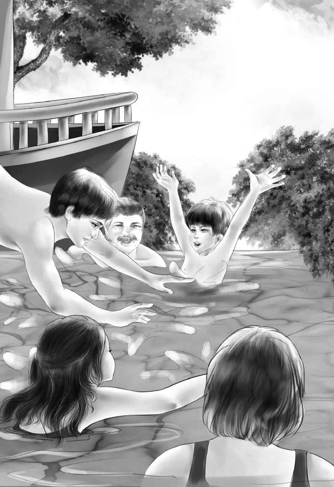

The next morning Henry said， “I have to leave half this stuff at home. I’ve got to take my camera and a flashlight and my fishing rod and tackle.”
“Can’t take that fishing tackle， Henry，” called Mr. Alden from his room. “This time we will have to go without some things. There isn’t room on the boat.”
Jessie said， “Henry， I’m afraid Watch thinks he is going. It’s too bad to leave him at home.” She looked at the big dog lying right in the way. She stepped over him.
Benny said， “He wouldn’t like a houseboat trip. He whined when we went aboard. He would bark every time we went swimming. You’ll be better off at home， Watch， with Mrs. McGregor.”
When the Aldens were away， Mrs. McGregor， their housekeeper， took care of things. She nodded and said， “Watch is always all right after you go. He sleeps in the hall and wags his tail when I go by. Then he walks out in the yard and lies in the shade. Don’t worry about him.”
At last the Aldens had everything stuffed into their suitcases. Henry had his camera and Benny had a flashlight.
Mrs. McGregor was right. Watch barked a little， but not much. He sat on the front steps with Mrs. McGregor as the Aldens packed the car.
When Henry drove away， Jessie looked back and saw Watch go into the house with Mrs. McGregor. He didn’t even try to follow the car.
“Well，” Jessie said， “we don’t have to worry about Watch anymore. I’m glad.”
When the Aldens reached River Road， Mr. Alden said， “There is a store on this road before we get to the houseboat.”
“Yes， Mr. Rivers told me about it， too，” said Jessie. “He says all the houseboat people get their food there. The man knows what they need.”
As the Aldens came into the store， the grocery-man said， “So you want to try houseboat life？”
“That’s right，” Benny said.
“Five of you， I see，” said the man. “You can choose between three cans of tuna and three cans of chicken. Take two cans of beans or two cans of hash. You can use a dozen eggs， two quarts of milk， two loaves of bread， sugar， salt， and butter. One cake of soap can be used for washing everything.”
“Coffee？” asked Violet， looking at Grandfather.
“Oh， yes， coffee，” the groceryman said. “But if you forget anything， you can stop and buy more down the river. We call it Second Landing.”
The Aldens put the groceries in the car and went along toward the houseboat. Mr. Rivers was there.
“Right on time！” he said. “You can lock your car and park it here. It will be safe. I’ll help you unload.”
“Fine！” said Benny. “I can hardly wait to see this boat go.”
“You can hardly see it go，” said Mr. Rivers， “even when it goes.” That made everyone laugh.
The suitcases and supplies were soon on board. Benny climbed up the ladder and changed the name to The James H. Alden.
“Looks fine，” said Mr. Rivers. Then he said to Henry， “Just pole yourself out to the middle of the river. It’s about eight feet deep. You can dive out there all right.”
“This is so exciting，” said Jessie as Henry pulled up the anchor and Mr. Rivers untied the rope.
Henry began to pole. Then suddenly there they were， floating gently away！
“Goody-bye， Mr. Rivers！” they shouted.
“Good luck！” he called. He watched them as they went out of sight around a bend in the river.
“Oh， let’s just watch the river for a little while，” said Violet. She sat down on the deck. “It won’t take us long to get settled.”
It was peaceful on the river. Sometimes it was so narrow that the beautiful trees almost met overhead. A big orange-and-black butterfly flew right across the deck.
“Look， a milkweed butterfly，” said Violet.
Benny looked at the cattails. They grew very thick near the shore. Suddenly he pointed. A red-winged blackbird was swinging on the reeds.
“Isn’t that beautiful？” said Jessie. “What bright red and yellow on his black wings！”
“He doesn’t sing，” said Violet. “Oh， he saw us. Do you suppose he has a nest somewhere？”
Then they all saw the nest. A dull brown bird flew off， showing a grassy cup with five blue eggs in it.
Mr. Alden said， “This must be their second family this year. It is too late for the first one.”
Benny said， “That pattern on the eggs is like modern art. All those brown wiggles. And look—there’s a blue heron.”
The water bird stood on one leg and did not move. He was so near that the Aldens could see every blue-gray feather and its black eyes.
“That’s probably why that other family named this boat The Blue Heron，”said Benny. “Maybe they saw a lot of blue herons.”
In a little while the Aldens began to put things away. Jessie put the food on the shelf. She came back on the deck to get the box of salt.Just as she picked it up， a bird flew right in front of her.
“Oh！” cried Jessie， jumping back. The salt slipped out of her hand and rolled along the deck， over the edge， and into the water.
“Oh， how could I？” said Jessie. “Now we haven’t any salt. And we must have salt.”
Grandfather said， “Don’t worry， Jessie. We’ll just watch for Second Landing and get another box of salt.”
In about half an hour Benny called out， “There it is. That must be Second Landing.”
“Yes，” said Henry. “And it looks as if there are several buildings there.”
Henry poled The James H. Alden up to the dock. The Aldens remembered what Mr. Rivers had said. They locked the houseboat， windows and all. Henry made sure it was tied up safely and the anchor dropped.
As usual， Benny was in a hurry. He was the first one on the dock and the first one on the narrow path. As he went through the bushes， he didn’t see a stone in his way and tripped over it and fell. When he stood up， he was covered with dirt and grass stains.
Jessie brushed him off and said， “Well， I guess I’ll have to wash these clothes， Ben. When we get back to the houseboat， you pull up a pail of water from the river.”
Violet added， “You can put on your swimsuit while your clothes dry. We can hang them on that little clothesline on the houseboat.”
“Oh，” said Benny， “that’s a lot of work. I don’t care much how I look.”
“Yes， Ben， we know that，” said Henry with a smile.
“There’s your store，” said Benny， pointing. A sign said，
Eric A. Martin， Groceries.
The whole family went into the store. “I need a box of salt，” Jessie told the man behind the counter. “Ours rolled overboard.”
The man laughed and took some salt off the shelf. “Are you the folks in the Rivers houseboat？” he asked.
“That’s right，” said Violet. “How did you guess？”
“Almost everyone forgets something or loses something，” said Mr. Martin. “They come in here because it’s the first place to stop.”
Henry asked， “Do you have any clothesline？”
Everybody stared at Henry. Jessie said， “There’s a fine clothesline on the boat， Henry.”
Mr. Martin said， “Yes， I have two kinds. Cotton and plastic.”
“I think I want cotton，” said Henry. “It’s softer.”
“Yes， it is softer and it stretches more，” Mr. Martin agreed.
“Good，” said Henry， looking at the bunch of line. “Not too many feet in one bunch. I’ll have to take two. I want a ball of string， too， please.”
“What in the world do you want with two bunches of clothesline and a ball of string？” asked Jessie.
“Secret，” replied Henry. “I don’t want to tell because I may not have good luck.”
“Oh， you will， Henry，” said Benny. “I know you. You must have a secret idea.”
“Let’s buy some bananas，” said Jessie. “They’re a good dessert， and there’s no cooking.”
Mr. Martin nodded. “Yes， you must have everything shipshape on a boat. You can’t cook too many things.”
Violet was looking out of the window. She said， “Grandfather， there’s a restaurant on the other side of the street.”
“It’s a good one， too，” said Mr. Martin. “Very good food.”
Violet went on， “It’s almost noon. I think it would save time to eat lunch here. We have so much to do on the boat.”
“Good！” said Grandfather. “We’ll do that.”
The Aldens said good-bye to Mr. Martin and walked across the street with their groceries.
There were only two men in the restaurant， having lunch. They sat off in one corner. The Aldens sat down at a big table on the other side of the room.
The food was excellent， and they all chose ice cream for dessert.
“No ice cream for a while，” said Jessie. “It won’t stay frozen on a houseboat.”
Benny and Grandfather were facing the two men. Benny looked at them and decided he didn’t like them. He didn’t really know why， so he said nothing.
Mr. Alden looked at the strangers， too. He thought， “I wonder what they are talking about. It seems to be nothing good.”
This was such a small restaurant that a husband and wife ran it alone. The man was the cook and his wife was the waitress.
Benny noticed the woman as she came out of the kitchen. She went over to the table where the two men sat. She asked， “Do you want more coffee？”
One of the men said， “Yes， I’d like some more.”
But when the waitress put down the cup， Benny saw her slip a small envelope under the saucer. Then she looked back toward the kitchen where her husband was. But the man was too busy to notice. He went on cooking.
The man at the table put the envelope into his pocket and tried to smile at the woman. But it was not a real smile. The waitress walked quickly over to the Aldens’ table.
The men kept their heads down as they talked in low voices. When the Aldens started to go out， Benny heard one man say roughly to the other， “What do you mean—find out？Nobody has found out yet. And it’s three years.”
When the Aldens were in the street， Benny said， “I don’t like those men in there.”
Henry looked at his brother and said， “What’s the matter， Ben？You always like everybody.”
“Well， I don’t like them，” said Benny. “That’s for sure. You were sitting with your back to them. You didn’t see them. What do you think， Grandfather？”
“I agree with you perfectly， Benny，” said Mr. Alden. “I didn’t like them either. They are up to no good.”
“Well， we’ll never see them again，” said Jessie， “and I’m glad.”
The Aldens started back toward the houseboat. Benny looked back at the restaurant and stopped suddenly. He could just see the front part of an expensive black car parked a little beyond the restaurant.
“I’ve seen that car before，” Benny thought to himself. Then he knew！It was the heavy black car that had almost hit them the day before！
“Two men in a hurry，” he thought. He decided to say nothing right away.
By now the Aldens had reached the houseboat. “It seems like home already，” said Violet.
Benny said， “Now don’t drop the salt again， Jessie.”
Jessie got the salt safely aboard. Benny carried the clothesline and string for Henry. Mr. Alden and Henry untied the boat， and Henry poled it out into the middle of the stream. It floated beautifully， and yet it went slowly.
Benny asked Henry， “Are you going to tell your secret now， Henry？”
“No， but I’m going to work on it. We’ll need it very soon. You can guess if you want to.”
Just then Jessie said， “Benny， change your clothes and I’ll wash your things out.”
“Oh， let’s watch Henry first，” Benny answered.
Jessie herself wanted to watch when Henry brought his clothesline on the deck and began to measure it. He made many long loops. Then he laid the middle of each loop on the deck and crossed it with another rope. He tied this place together with string.
“What in the world！” said Violet. “Are you making a chair seat？”
Henry looked at his sister in astonishment. “How did you ever guess？” he said. “It doesn’t look like anything so far.”
“You mean I’m right？” asked Violet. “I was only guessing.”
“Well， you guessed right，” said Henry. He crossed another line and tied it.
“Why do we need another chair seat？” asked Benny. “We’ve got enough chairs， and someone can always lie down.”
“This is different，” said Henry. He tied the last cord. What he had made looked like a square piece of net with very long ends.
“Remember that big hook on the back of the boat？But wait. I’ll put on my swimming trunks first. You change， too， Benny.”
When the boys came back， the family went down to the rear deck. Henry hung the loops on the hook so that the seat was over the water. He made a fine dive off the boat. He swam back and came up beside the new chair seat.
But when Henry got into the seat， it began to go down， down， down！The ropes stretched so much that Henry was soon up to his neck in water.
Everyone began to laugh. “A joke on me，” said Henry. “I thought I could sit in this seat and wash Benny’s clothes. Then we wouldn’t have to take all that water on board.”
“It’s a good idea， though，” said Mr. Alden quickly. “Maybe you can still make it work. Make the loops shorter.”
“You’re too heavy， Henry，” said Benny.
Then Violet said， “Maybe I’m not. Let me do the laundry！” She went inside and put on her swimsuit. Henry climbed out of the seat and Violet climbed in. There she sat， just up to her waist in the river.
“Good for you，” said Mr. Alden. “Too bad there isn’t any laundry.”
“Oh， but there is，” said Violet. “Benny， just hand down your shirt and shorts and the cake of soap.”
“You can’t hold the soap，” called Benny. “What will you do with it？”
“Well，” said Violet looking around at the water， “put the soap dish on the deck and I’ll put the soap in it every time I use it.”
She soaped Benny’s clothes and rubbed and rinsed them in the river.
“Pass them up to me， Violet，” said Jessie. “I’ll hang them on the real clothesline. There’s nothing so homelike as having washing on the line.”

Then they all went swimming. The water was cool and lovely. Even Mr. Alden was floating beside the boat.
“This is the nicest place，” said Benny. “If you want to go swimming， just jump out the window.”
After their swim， the Aldens were glad to sit on the deck. Everyone was so hungry that they had supper at five o’clock.
Henry took his last bite and said， “I think we should find a place for the night before it gets any darker.”
“You and Benny find one，” said Jessie. “Violet and I will wash the dishes and clean up the kitchen.”
“Galley， not kitchen，” said Mr. Alden. And after that it was always the galley.
The boys found a fine place to stay for the night， where the branches of the trees hung over the houseboat. They left the windows open， but locked the doors.
In his bunk， Benny turned this way and that. He could not get to sleep. He kept remembering those two men in the restaurant and the little envelope and the big black car parked outside.